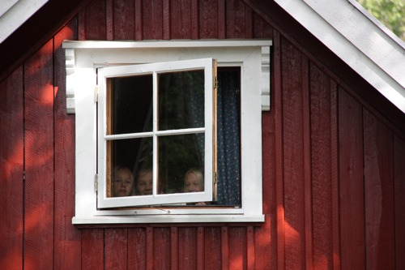
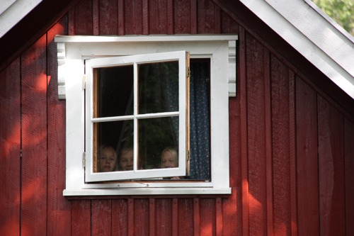

BESKRIVELSE AV 14 BOENHETER OG PRISER I 2021 - BONDEGÅRDSFERIE PÅ AARHOLT-TUNET.
Programmet er også
inkludert i prisen.
 

Takk for flotte uker med alle dere feriegjestene som har vært på Aarholt-tunet sommeren 2020.
Vi er
allerede ganske fullbooket i 2021. Men vi kan sette på venteliste om ønsket boenhet i ønsket uke ikke er
ledig.
BONDEGÅRDSFERIE 2021.
Vi gleder oss til å gjennomføre de flotte og minnerike bondegårdsferieukene, også i 2021.
- På Aarholt-tunet bor familiene i egne boenheter med bad og kjøkkenkrok og ordner måltidene selv.
- I det omfattende bondegårdsferie-programmet vi har er det nødvendig at voksne og barn i samme familie er sammen både i aktiviteter og fritid.
- Vi har ekstra hånd-vaskestasjon ute.
- Stedet står tomt i 2 døgn før dere kommer /mellom hver bondegårdsferieuke.
- Bare de som er friske kan komme.
LEDIG:
Her er en oversikt over hva som på nåværende tidspunkt (slutten av november) er ledig.
En kan sette seg på venteliste om ønsket boenhet i ønsket uke ikke er ledig.
uke 26;
sønd. 27. juni - fred. 2. juli 2021
Ledig i Hytte.
uke 27;
sønd. 4. - fred. 9. juli 2021
Ledig i rom på låven.
uke 28;
sønd. 11. - fred. 16. juli 2021
Fullbooket.
uke 29;
sønd. 18. - fred. 23. juli 2021
Ledig rom på låven
uke 30;
sønd. 25. - fred. 30. juli 2021
Fullbooket.
-------
Bestilling gjøres ved å kontakte:
Aarholt-tunet v/Ingfrid Weydahl og Svein Aarholt: tlf. 33 33 90 96
Hvis du mailer oss på oss@aarholt-tunet.no så sjekk at du får
svar samme dag. Vi prøver å få sjekket mailer flere ganger hver dag.
Fortell oss gjerne i første mail hvilken boenhet og uke dere ønsker og gjerne også hvor mange dere
er og alder på barna, (i tilfelle ønsket boenhet er opptatt kan vi komme med alternative forslag). Ved
bestilling trenger vi også navn på dere alle, og en adresse.
Vi sender ut mail i begynnelsen av 2021 med leieavtale, brosjyre, velkomstbrev, kart og
depositum-faktura.
Hjertelig velkommen både til gjester som har vært her før og til nye!
-------
Prisene nedenfor inkluderer leie av leilighet og alt aktivitetsprogram.
Programmet er for HELE familien, - hver dag på gården (se: "Om bondegårdsferie" i menyen til venstre).
Det er selvhushold og mat kan lages på minikjøkken i leiligheten eller på grillen på tunet.
En familieuke starter søndag ettermiddag kl.17.00 og går over 5 døgn til fredag formiddag. Det er
aktiviteter og program hver dag. Kortere opphold midt i en uke, har vi ikke ledig kapasitet til. Det er
heller ikke anledning til å ha med egne dyr. Innemiljøet er dyrefritt pga. allergihensyn og i utemiljøet
finnes dyra våre.
Ved avreise må boenheten være ryddet ordentlig og rengjort. Selve sluttrengjøringen kan bestilles. Denne bestillingen gjøres før dere kommer eller senest ved ankomst.
Sengetøysett og håndkler kan også leies for kr 150,- + 30,- pr. sett. Eller dere tar med rent sengetøysett vasket på over 60 grader. Vi låner ut dyner og puter til ALLE. Ingen trenger å ta med egne dyner og puter.
HYTTER (3-7 soveplasser)
To stk. gamle nyrestaurerte tømmerhytter. Var opprinnelig et våningshus fra Lardal som vi saget i to,
flyttet til gården og satt opp stokk for stokk i 1991/92.
Ca 24-32 m2 i grunnflate + halv annen
etg. på 24 m2 gulvflate med skråtak.
1.etg.: Gang med kjøkkenkrok. Bad med dusj og toalett. Stue med
sofa, spiseplass og mulig soveplass (bildet til venstre).
2.etg.: Bratt trapp opp til 2 små soverom/loft med 2+4 soveplasser (bilde til høyre).
Pris kr 14.500,- pr. uke inkluderer også aktivitetsprogrammet. (I hyttene kan to familier være sammen, men da kommer et tillegg på 30 % på ukesprisen for aktivitetsprogrammet for den andre familien).
LÅVE (2-4 sovepl)
Gammel låve fra 1885 hvor høyløe er blitt til forsamlingssal (amfi), fjøset og møkkakjelleren - til
stuer, og låvegulvet til matsal. Restaurert i 1994-2008.
Inneholder 5 stk. ettroms leiligheter med utgang til det fri / svalganger.
* 2 stk. ettroms leiligheter i 2. etg. med utgang til svalegangen.
Utsikt over gårdstun. 2-4 soveplasser, bl.a. i køye.
Kjøkkenkrok og eget bad.
Pris kr 11.500,- pr. uke inkluderer også aktivitetsprogrammet.
* 3 stk. ettromsleiligheter i 1. etg. på låven. Inngang fra østsiden (høyre side når du står på
gårdsplassen og ser mot den gamle røde låven), 2-3 eller 2-4 soveplasser, kjøkkenkrok og eget bad. (Se
to bilder like nedenfor.)
Pris kr 11.500,- pr. uke inkluderer også aktivitetsprogrammet.
BRYGGERHUS
Bryggerhuset (venstre delen av det hvite huset) var gårdens gamle grovkjøkken for bla. kleskok, slakting og brygging. Den høyre delen er et tømmerhus fra Sandefjord som vi satte opp og restaurerte i 1991/92. Nyrestaurerte leiligheter i både 1. og 2.etg., skråtak i hele 2.etg.
1.etg. har i tillegg felles oppholdsrom for alle på gården i koselig stue med grue og bakerovn (som vi
baker brød i en gang i løpet av uka).
* 1.etg. Lite soverom med 2-3 soveplasser, (to senger og overkøye). (se "Det gule rommet" i billedmenyen
til høyre). Eget kjøkken i rom ved siden av. Bad. Pris kr 11.500,- pr. uke inkluderer også
aktivitetsprogrammet.
* 1.etg. Soverom / stue med 3-5 soveplasser, bad, stort kjøkken i rom ved siden av. (Se bildene
over.)
Pris kr 12.500,- pr. uke inkluderer også aktivitetsprogrammet.
* 2.etg.: "Forstue" med kjøkkenkrok, bad, 2 soverom med skråtak og egen vask på hvert av disse
soverommene
, totalt 6-8 soveplasser. Pris kr 14.500.-
pr. uke inkluderer også aktivitetsprogrammet.
(I denne leiligheten kan to familier være sammen, men da kommer et tillegg på 30 % på ukesprisen for
aktivitetsprogrammet for den andre familien).

* 2.etg.: Gang med dobbelseng/sovealkove, bad, stue-soverom og kjøkkenkrok i ett (se bildene over), +
ett lite ekstra soverom. Tilsammen 3-6 soveplasser. Pris kr 13.500,- pr. uke inkluderer også
aktivitetsprogrammet.
* 2.etg.: Gang med dobbelseng/sovealkove, bad, stue-soverom og kjøkkenkrok i ett, + ett lite ekstra
soverom. Tilsammen 3-6 soveplasser. Pris kr 13.500,- pr. uke inkluderer også
aktivitetsprogrammet.
STORT STABBUR (5-8 soveplasser + hemser).
Gammelt stabbur fra 1851 i to etasjer, som vi flyttet til gården fra Åssiden i Drammen 1989/90. Stabburet
fikk vinteren 2007 to små soverom i 2. etg. med egne bad, 3 senger og 2 små hemser på hvert rom (bilde
under til høyre). Samt en liten ettromsleilighet i 1. etg. med soveplasser, spiseplass og bad (bilde
under til venstre). Totalt 5-8 ++ sovepl. Pris kr 16.500.- pr. uke inkluderer også aktivitetsprogrammet.
(Her kan to familier være sammen, men da kommer et tillegg på 30 % på ukesprisen for
aktivitetsprogrammet for den andre familien.)

TUNSTABBUR.
Gammelt, lite, og svært koselig stabbur midt på tunet. Stabburet er i 1½.etg., nyrestaurert vinteren 2007
og i 2011 med nytt stort vindu på baksiden. (På "logotegningen" øverst til høyre på denne siden er
Tunstabburet det nærmeste stabburet.)
Kjøkkenkrok, nytt bad under loftstrappa (sees på bildet under til venstre), 2-4 soveplasser på loft med
skråtak (bildet under til høyre). Pris kr 12.500,- pr. uke inkluderer også aktivitetsprogrammet.
På bildet under er Tunstabburet i midten og låven til høyre.


{kind=link}
{kind=link}
{kind=link}
{kind=link}
{kind=link}
{kind=link}
{kind=link}
{kind=link}
{kind=link}
{kind=link}
{kind=link}
{kind=link}
{kind=link}
{kind=link}
{kind=link}
{kind=link}
{kind=link}